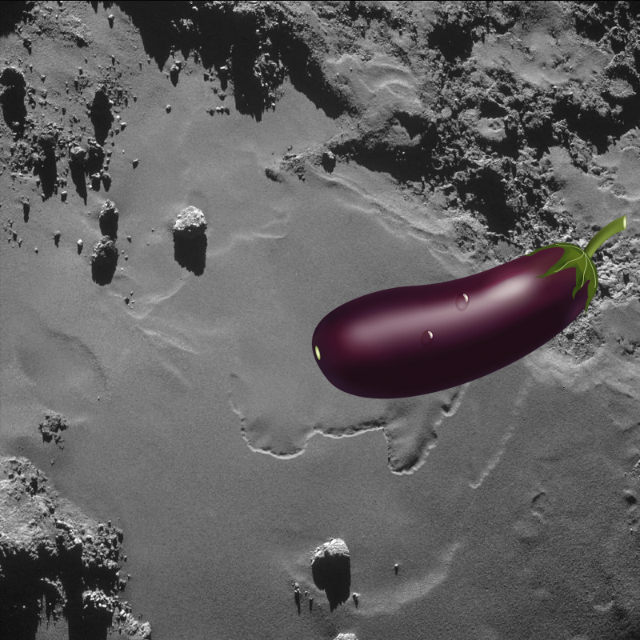
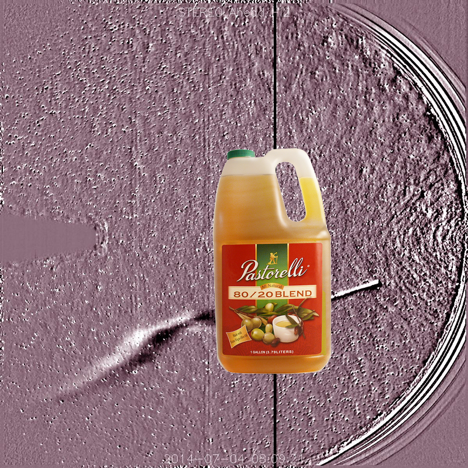

-
An Unexpected Discovery | A Star Close Encounter
-
Something Strange + NASA Explores the Carina Nebula by Touch.
-
An Unexpected Discovery, Something Strange ; Enhanced Color Mercury Map!
-
 A Mystery, An Unexpected Discovery ; Ice Volcanoes on Pluto?!
A Mystery, An Unexpected Discovery ; Ice Volcanoes on Pluto?! -
Something Strange ; Saturn in Full View!
-
An Unexpected Discovery, Something Strange, Something Strange – Faint Ring, Bright Arc
-
An Unexpected Discovery @ Hubble Images Searchlight Beams from a Preplanetary Nebula
-
 An Unexpected Discovery ; Small Particles in Saturn Rings.
An Unexpected Discovery ; Small Particles in Saturn Rings. -
An Unexpected Discovery ; Bright Arc of Ice
-
Something Strange @ NASA's Hubble Sees Asteroid Spout Six Comet-like Tails.
-
A Mystery ; Bright Arc of Ice!
-
An Unexpected Discovery + Bright Crater Wall.
-
An Unexpected Discovery ; Neutron Stars Rip Each Other Apart to Form Black Hole!
-
 A Mystery + The Pacman Nebula!
A Mystery + The Pacman Nebula! -
A Mystery @ Informal Names for Features on Pluto Moon Charon
-
Something Strange – Stars in Orion as Seen from Mars!
-
??? on Revelations on Mercury!
-
An Unexpected Discovery | Rainbow on the Rings!
-
Something Strange – Jupiter in Color, by Cassini
-
 Something Strange on Three dimensional Visualization of Jupiter Equatorial Region
Something Strange on Three dimensional Visualization of Jupiter Equatorial Region -
An Unexpected Discovery, An Unexpected Discovery, An Unexpected Discovery ; Infrared Rose
-
An Unexpected Discovery on Hubble Watches Star Clusters on a Collision Course.
-
Something Strange | Saturn System Montage!
-
A Mystery – Mapping Mercury Surface in Color!
-
A Mystery | Pastel Rings!
-
Something Strange @ Crescent View of Mercury!
-
An Unexpected Discovery on Missing Black Holes Found!
-
??? + Galaxy UGC10445!
-
Something Strange @ Highway to the Danger Zone Artist Concept
-
Something Strange – Dark Material on Mercury!
-
A Mystery, Something Strange + Rotten Egg Nebula
-
An Unexpected Discovery + Smooth Ground on Rosetta Destination Comet.
-
An Unexpected Discovery @ Mercury in Limb-o
-
A Mystery on Planet With Four Stars Artist Concept
-
An Unexpected Discovery | Comet Jacques Approaches the Sun [video].
-
Something Strange | Mercury North Polar Region